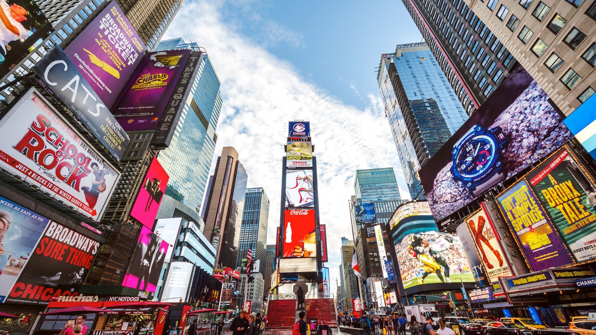

ניו יורק, ארה"ב |
|
|
 |
על העירהתפוח הגדול הוא מרכז עולמי לתרבות, פיננסים ובידור, ועיר שלעולם אינה ישנה. ניו יורק מפורסמת בזכות קו הרקיע הבלתי נשכח שלה, הכולל את האמפייר סטייט בילדינג וגורדי שחקים המגרדים את העננים. כל שכונה בעיר היא עולם ומלואו עם אופי ותרבות שונה לחלוטין. במרכז האי מנהטן שוכן הסנטרל פארק, ריאה ירוקה ענקית המציעה מפלט מהמולת הכרך. לא רחוק משם נמצאת כיכר הטיימס סקוור המוארת באורות ניאון מסנוורים, המהווה את הלב הפועם של אזור התיאטראות של ברודוויי, בו עולים המחזות המפורסמים בעולם. ניו יורק היא כור היתוך של תרבויות מכל קצוות תבל, מה שמתבטא במגוון אינסופי של מאכלים וחוויות. בין אם זה ביקור במוזיאון המטרופוליטן לאמנות או טיול רגלי על גשר ברוקלין, העיר מציעה אנרגיה תוססת שממלאת כל מבקר בהשראה ובחשק לגלות עוד. |